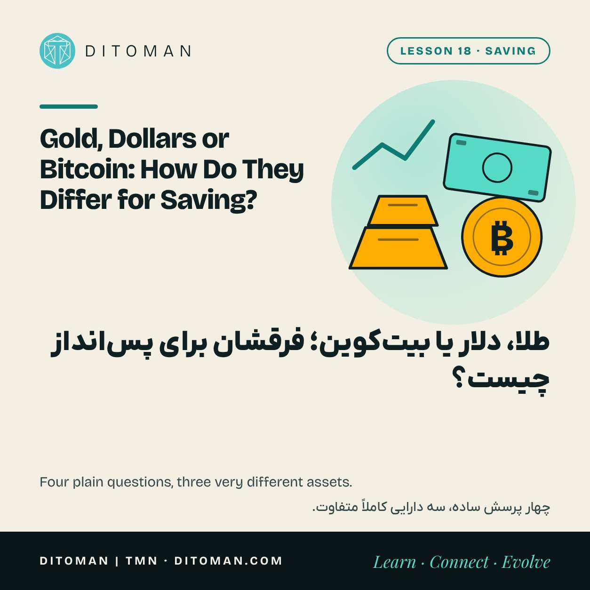
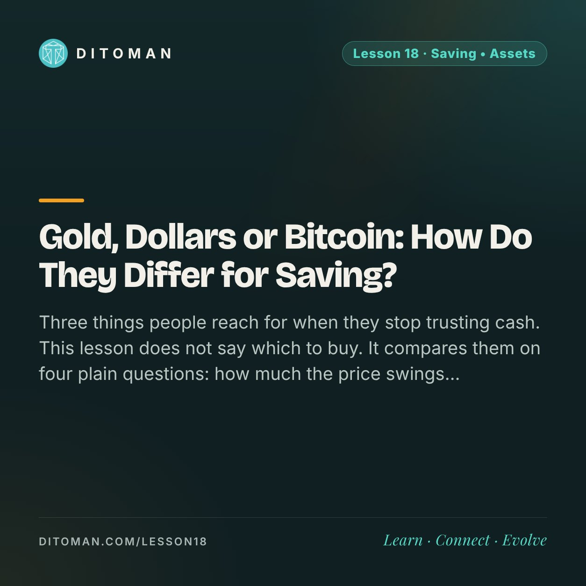

Gold, Dollars or Bitcoin: How Do They Differ for Saving?
طلا، دلار یا بیتکوین؛ فرقشان برای پسانداز چیست؟
Three things people reach for when they stop trusting cash. This lesson does not say which to buy. It compares them on four plain questions: how much the price swings, how easily it sells, what it costs to keep and what can go wrong.
سه چیزی که آدمها وقتی اعتمادشان به پول نقد کم میشود سراغش میروند. این درس نمیگوید کدام را بخرید. آنها را با چهار پرسش ساده مقایسه میکند: قیمت چقدر بالا و پایین میرود، چقدر راحت فروخته میشود، نگه داشتنش چه هزینهای دارد و چه چیزی ممکن است خراب شود.
Lesson Content
محتوای درس
Read the lesson in English or Persian.
درس را به فارسی یا انگلیسی بخوانید.
Lesson 12 showed what inflation does to cash that sits still. The natural next thought is: then I should hold something else. In many families the answer has been the same for generations: gold, or dollars. In the last few years a third name has joined the conversation: bitcoin.
People argue about which is best as if there were one answer. There is not, because the three are different kinds of thing. We can compare them fairly with the same four questions.
First, saving is not speculating
Saving is putting money aside so that it is there when you need it. The aim is to keep buying power.
Investing is accepting risk for a return that comes from something productive: a business, a property, a loan.
Speculating is buying something mainly because you expect the price to rise.
The same asset can serve any of the three. What changes is your time horizon and how much loss you can bear. Money you will need in six months is in a very different position from money you will not touch for ten years.
Question 1: how much does the price swing?
All three move, but not by the same amount.
The dollar moves least against goods in the short run, though it loses buying power slowly through its own inflation. US inflation peaked above 9 percent in mid-2022.
Gold has long quiet periods and then sharp moves. After its 2011 peak near 1,900 dollars an ounce, it fell by about 45 percent over the next four years before recovering later.
Bitcoin swings far more. From about 69,000 dollars in November 2021 it fell below 16,000 dollars a year later, a drop of more than 75 percent, and later rose to new highs above 126,000 dollars in October 2025.
A large swing is not good or bad on its own. It decides how long you must be able to wait.
Question 2: how easily does it sell?
This is liquidity: turning the asset back into spendable money quickly and close to the quoted price.
Dollars and gold coins have deep markets almost everywhere, but the buying and selling prices differ. That gap, the spread, is a cost you pay twice. For small pieces of gold, and for jewellery with a making charge, the gap is wide.
Bitcoin trades around the clock, and large amounts can be sold in minutes on big exchanges. In practice, though, your own liquidity depends on your access to an exchange and to a bank or broker on the other side.
Question 3: what does it cost to keep?
Physical dollars and gold must be stored somewhere safe from theft, fire and damage. Worn or older banknotes can be harder to sell.
Bitcoin weighs nothing, but keeping it safely means managing a key or trusting a custodian, as Lesson 13 explained.
None of the three pays interest by sitting still. That is a real difference from a deposit, a bond or a business.
Question 4: what can go wrong?
| Dollars (cash) | Gold | Bitcoin | |
|---|---|---|---|
| Price | Slow loss to inflation | Long weak periods | Falls of more than half |
| Keeping it | Theft, damage, worn notes | Theft, fakes, purity | Lost key, scams, failed exchange |
| Selling it | Buy and sell gap | Gap and making charge | Needs exchange access |
| Rules | Limits on holding or trading | Taxes and trade limits | Changing regulation |
Each row is a different kind of risk. Notice that none of the columns is empty.
Why people spread their savings
Because the three fail in different ways, they do not always fall together. Holding more than one kind of asset, in amounts that match when you will need the money, is called diversification. It does not remove risk. It avoids depending on a single story being right.
How much of each, if any, depends on your income, your needs and your country's rules. That is a personal decision this lesson cannot make for you.
What to take from this
Know whether you are saving, investing or speculating before you choose an asset.
Compare assets on the same four questions: swing, liquidity, cost of keeping and what can go wrong.
The dollar is steadier but loses value slowly. Gold is old and slow, with long weak periods. Bitcoin can rise fast and fall by more than half.
The spread is a cost paid at both ends.
Nothing here is a recommendation to buy or sell anything.
درس ۱۲ نشان داد تورم با پول نقدی که بیحرکت میماند چه میکند. فکر بعدی طبیعی است: پس باید چیز دیگری نگه دارم. در خیلی از خانوادهها جواب نسلهاست که یکی بوده: طلا یا دلار. در چند سال اخیر نام سومی هم به این گفتوگو اضافه شده: بیتکوین.
آدمها طوری بحث میکنند که انگار یک جواب درست وجود دارد. وجود ندارد، چون این سه از یک جنس نیستند. میشود آنها را منصفانه با چهار پرسش یکسان کنار هم گذاشت.
اول: پسانداز با سفتهبازی فرق دارد
پسانداز یعنی کنار گذاشتن پول تا وقتی لازم شد، باشد. هدفش حفظ قدرت خرید است.
سرمایهگذاری یعنی پذیرفتن ریسک برای بازدهی که از یک کار مولد میآید: کسبوکار، ملک یا وام.
سفتهبازی یعنی خریدن چیزی، بیشتر به این امید که قیمتش بالا برود.
یک دارایی میتواند برای هر سه به کار برود. چیزی که فرق میکند افق زمانی شما و مقدار ضرری است که تحملش را دارید. پولی که شش ماه دیگر لازم میشود با پولی که ده سال به آن دست نمیزنید در دو وضع کاملاً متفاوت است.
پرسش ۱: قیمت چقدر بالا و پایین میرود؟
هر سه تکان میخورند، ولی نه به یک اندازه.
دلار در کوتاهمدت کمتر از همه در برابر کالاها تکان میخورد، هرچند با تورم خودش آرامآرام قدرت خرید از دست میدهد. تورم آمریکا در میانهی ۲۰۲۲ از ۹ درصد بالاتر رفت.
طلا دورههای آرام طولانی دارد و بعد حرکتهای تند. بعد از اوج سال ۲۰۱۱ نزدیک ۱٬۹۰۰ دلار برای هر اونس، در چهار سال بعد حدود ۴۵ درصد افت کرد و بعدها دوباره بالا رفت.
بیتکوین خیلی بیشتر نوسان دارد. از حدود ۶۹ هزار دلار در نوامبر ۲۰۲۱ یک سال بعد به زیر ۱۶ هزار دلار رسید، یعنی افتی بیش از ۷۵ درصد، و بعدها در اکتبر ۲۰۲۵ به اوج تازهای بالای ۱۲۶ هزار دلار رفت.
نوسان زیاد بهخودیخود خوب یا بد نیست. تعیین میکند چقدر باید بتوانید صبر کنید.
پرسش ۲: چقدر راحت فروخته میشود؟
این همان نقدشوندگی است: تبدیل سریع دارایی به پول قابلخرج، با قیمتی نزدیک به قیمت اعلامشده.
دلار و سکهی طلا تقریباً همهجا بازار پررونقی دارند، ولی قیمت خرید و فروششان یکی نیست. این فاصله، هزینهای است که دو بار میپردازید. برای قطعههای کوچک طلا و برای زیورآلاتی که اجرت ساخت دارند، این فاصله زیاد است.
بیتکوین شبانهروز معامله میشود و در صرافیهای بزرگ میشود مبلغ زیادی را در چند دقیقه فروخت. ولی در عمل، نقدشوندگی برای خودِ شما به دسترسیتان به صرافی و به بانک یا واسطهی آن طرف بستگی دارد.
پرسش ۳: نگه داشتنش چه هزینهای دارد؟
دلار و طلای فیزیکی را باید جایی نگه داشت که از دزدی، آتش و آسیب در امان باشد. اسکناس فرسوده یا قدیمیتر هم ممکن است سختتر فروخته شود.
بیتکوین وزنی ندارد، ولی نگهداری امنش یعنی مدیریت یک کلید یا اعتماد به یک نگهدارنده؛ درس ۱۳ این را توضیح داد.
هیچکدام از این سه با بیحرکت ماندن سودی نمیدهند. این تفاوتی واقعی با سپرده، اوراق یا کسبوکار است.
پرسش ۴: چه چیزی ممکن است خراب شود؟
| دلار (نقد) | طلا | بیتکوین | |
|---|---|---|---|
| قیمت | افت آرام با تورم | دورههای ضعف طولانی | افت بیش از نصف |
| نگهداری | دزدی، آسیب، اسکناس فرسوده | دزدی، تقلبی بودن، عیار | گم شدن کلید، کلاهبرداری، ورشکستگی صرافی |
| فروش | فاصلهی خرید و فروش | فاصلهی قیمت و اجرت | نیاز به دسترسی به صرافی |
| قواعد | محدودیت نگهداری یا معامله | مالیات و محدودیت معامله | مقررات در حال تغییر |
هر ردیف نوع دیگری از ریسک است. دقت کنید که هیچ ستونی خالی نیست.
چرا آدمها پساندازشان را پخش میکنند
چون این سه به شکلهای متفاوتی آسیب میبینند، همیشه با هم پایین نمیآیند. نگه داشتن بیش از یک نوع دارایی، به اندازهای که با زمان نیازتان به پول بخواند، تنوعبخشی نام دارد. ریسک را حذف نمیکند. فقط نمیگذارد همهچیز به درست بودن یک روایت بسته باشد.
اینکه از هر کدام چقدر، یا اصلاً نه، به درآمد، نیازها و قواعد کشور شما بستگی دارد. این تصمیمی شخصی است که این درس نمیتواند بهجای شما بگیرد.
چه برداشتی کنیم
پیش از انتخاب دارایی، بدانید دارید پسانداز میکنید، سرمایهگذاری یا سفتهبازی.
داراییها را با همان چهار پرسش مقایسه کنید: نوسان، نقدشوندگی، هزینهی نگهداری و چیزهایی که ممکن است خراب شود.
دلار باثباتتر است ولی آرامآرام ارزش از دست میدهد. طلا قدیمی و کند است و دورههای ضعف طولانی دارد. بیتکوین میتواند تند بالا برود و بیش از نصف افت کند.
فاصلهی قیمت خرید و فروش هزینهای است که در هر دو سر میپردازید.
هیچ بخشی از این درس توصیه به خرید یا فروش چیزی نیست.
Two lessons that go with this one
دو درسی که کنار این درس مینشینند
Lesson 12 explains the inflation that makes people look for alternatives. Lesson 06 gives five questions to ask yourself before buying anything at all.
درس ۱۲ تورمی را توضیح میدهد که آدمها را به فکر جایگزین میاندازد. درس ۶ پنج پرسشی را میدهد که پیش از خرید هر چیزی باید از خودمان بپرسیم.
Key Concepts
مفاهیم کلیدی
- Saving, investing, speculating
- Time horizon
- Volatility
- Drawdown
- Liquidity
- Spread
- Storage and custody
- Diversification
- پسانداز، سرمایهگذاری، سفتهبازی
- افق زمانی
- نوسان
- افت از اوج
- نقدشوندگی
- فاصلهی قیمت خرید و فروش
- نگهداری
- تنوعبخشی
Learning Objectives
اهداف یادگیری
- Tell saving from investing and speculating.
- Compare dollars, gold and bitcoin on price swings.
- Explain liquidity and the spread.
- Name one keeping risk for each of the three.
- Say what diversification does and does not do.
- پسانداز را از سرمایهگذاری و سفتهبازی تشخیص دهید.
- دلار، طلا و بیتکوین را از نظر نوسان قیمت مقایسه کنید.
- نقدشوندگی و فاصلهی قیمت خرید و فروش را توضیح دهید.
- برای هر کدام از این سه، یک ریسک نگهداری نام ببرید.
- بگویید تنوعبخشی چه کاری میکند و چه کاری نمیکند.
Quiz
آزمونک
Check what stayed with you. The answer is under each question.
ببین چه چیزی در ذهنت مانده. پاسخ زیر هر پرسش آمده است.
Question 1
پرسش ۱
What is the aim of saving?
هدف پسانداز چیست؟
A. The highest possible return
الف. بیشترین سود ممکن
B. Keeping buying power for when the money is needed
ب. حفظ قدرت خرید برای وقتی که پول لازم میشود
C. Beating other people's returns
ج. جلو زدن از سود دیگران
Correct answer: B
پاسخ درست: ب
Question 2
پرسش ۲
Which of the three has shown the largest price falls?
کدامیک از این سه بزرگترین افت قیمت را نشان داده است؟
A. Dollars
الف. دلار
B. Gold
ب. طلا
C. Bitcoin
ج. بیتکوین
Correct answer: C. It fell by more than 75% between November 2021 and November 2022.
پاسخ درست: ج. از نوامبر ۲۰۲۱ تا نوامبر ۲۰۲۲ بیش از ۷۵٪ افت کرد.
Question 3
پرسش ۳
What is the spread?
فاصلهی قیمت خرید و فروش چیست؟
A. The gap between buying and selling prices
الف. تفاوت قیمتی که میخرید با قیمتی که میفروشید
B. The yearly interest
ب. سود سالانه
C. The weight of a coin
ج. وزن یک سکه
Correct answer: A
پاسخ درست: الف
Question 4
پرسش ۴
Which statement is true of all three assets?
کدام جمله دربارهی هر سه دارایی درست است؟
A. They pay interest while you hold them
الف. در مدت نگهداری سود میدهند
B. They pay nothing by sitting still
ب. با بیحرکت ماندن سودی نمیدهند
C. Their price never falls
ج. قیمتشان هرگز پایین نمیآید
Correct answer: B
پاسخ درست: ب
Question 5
پرسش ۵
What does diversification do?
تنوعبخشی چه کاری میکند؟
A. Removes all risk
الف. همهی ریسک را حذف میکند
B. Guarantees a profit
ب. سود را تضمین میکند
C. Avoids depending on one asset being right
ج. نمیگذارد همهچیز به یک دارایی بسته باشد
Correct answer: C
پاسخ درست: ج
Sources
منابع
- US Bureau of Labor Statistics: Consumer Price Index
- World Gold Council: Gold price history
- CoinGecko: Bitcoin price history
- US SEC Investor.gov: Saving and investing basics
Past price moves are examples of how each asset has behaved. They do not predict what comes next.
حرکتهای گذشتهی قیمت نمونههایی از رفتار هر داراییاند و آینده را پیشبینی نمیکنند.
با هم دنبال میکنیمFollow along
New lessons are announced first on Ditoman's channels.
درسهای تازه اول در کانالهای دیتومان معرفی میشوند.